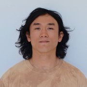

NINDS K99 Postdoctoral Fellow
Laboratory of Neural Systems
The Rockefeller University
New York, USA
ltian@rockefeller.edu
I work at the intersection of systems neuroscience, computational neuroscience, and cognitive science. I study how operations in the brain give rise to intelligent behavior, specifically operations corresponding to cognitive algorithms we can explain in terms of information processing in the collective activity of neurons, and the kind of intelligence that allows us to solve new problems through internal, cognitive processes, such as reasoning, inference, and imagination.
I approach this by recording the spiking activity of many (100s of) neurons in monkeys performing difficult cognitive tasks. I analyze neural and behavioral data using a variety of techniques, including trying to capture the data in computational models that (very) loosely simulate the brain/body (human behavior: Tian et al. NeurIPS 2020; NeurIPS talk).
A relatively tractable paradigm to address these questions is to study how we internally construct and organize new hierarchically structured actions to solve physical problems (e.g., imitiating a new dance).
In monkeys performing a task involving novel compositional drawing to copy geometric figures (resembling handwriting), I discovered that primate frontal cortex harbors a representation of symbolically structured actions (e.g., a "circle" stroke abstraction). This representation is in a specific brain area called ventral premotor cortex (Tian et al., accepted in Nature; bioRxiv 2025; COSYNE talk).
These action symbols may correspond to the kinds of motor concepts that allow us to internally construct and organize complex action sequences (e.g., to cook dinner), use complex tools, play music, learn sports, and otherwise interact intelligently with the physical world. They may also play a role in non-motor cognitive abilities (e.g., action imagination). Finding this representation in monkeys may eventually lead us to a mechanistic explanation of how these abilities work in the brain, including when disrupted in disease.
I am currently a postdoc with Winrich Freiwald (Rockefeller University). I also work closely with Xiao-Jing Wang (NYU), and Josh Tenenbaum (MIT).
During my Ph.D. in neurophysiology and behavior at UCSF with Michael Brainard, I studied how the brain allows us to learn and executive fine motor skills; specifically, how circuits balance the need to reuse individual actions across sequential contexts (generalization) with the need for appropriate adjustments to actions within contexts (specialization) (Tian & Brainard, Neuron 2017; Veit, Tian, et al., eLife 2021; Tian et al., eLife 2023). In the songbird, I discovered that this balance is achieved by a hierarchical circuit in which one area encodes reused discrete actions, while a second cortical-basal ganglia area provides biasing signals to drive context-specific adjustments to these actions. This revealed that motor skill depends on a specific two-area hierarchical circuit mechanism.